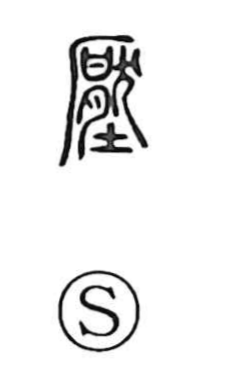

圧

Uncategorized
Kun: osaeru, shizumeru | On: atsu, ou
pressure ・ to press ・ to suppress ・ to appease
Explanation
Originally written as 壓, the character joins 厭 and 土. The graph 厭 depicts dog meat fastened to a bone beneath a cliff-like canopy, a ritual arrangement used to counter and drive out malign forces within the earth—a practice termed 厭勝, the averting of evil by spell. 壓 thus portrays performing a rite upon the soil to force down and dispel the malevolence hidden there, purifying and pacifying the ground. From this ritual sense arise the meanings “to press down,” “to suppress,” and “to appease.” The simplified form 圧 preserves the idea of a spell-driven pacification of the earth’s spirits.